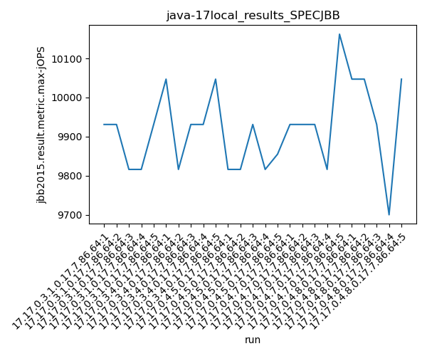
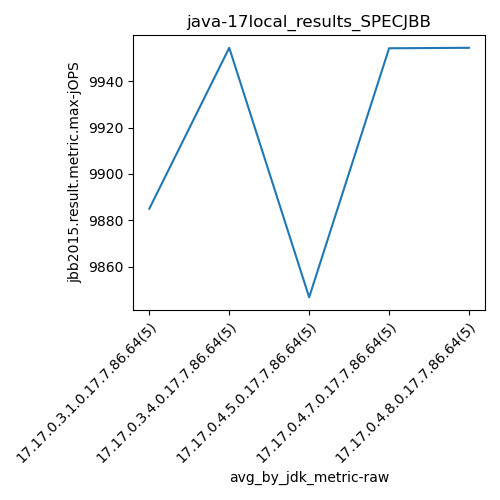
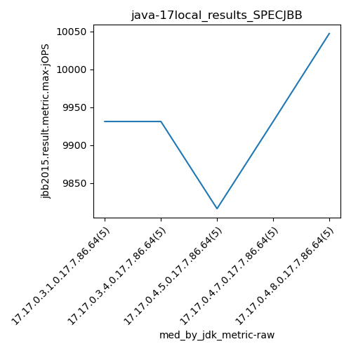
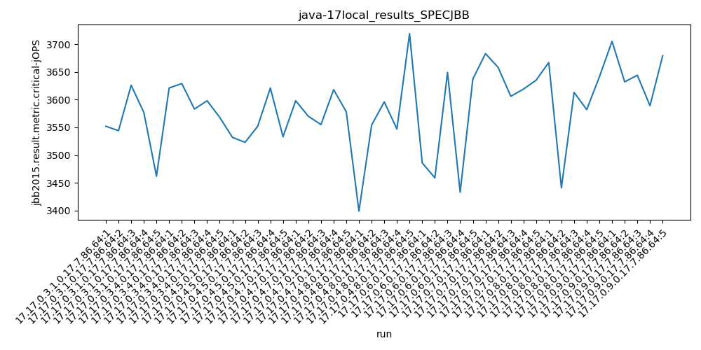
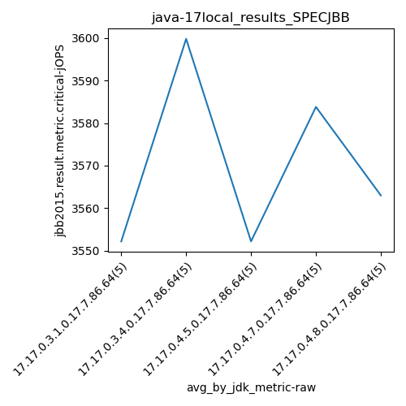
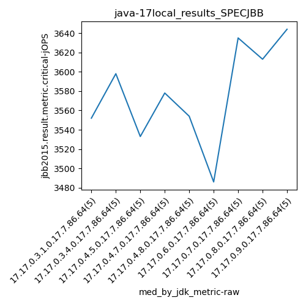
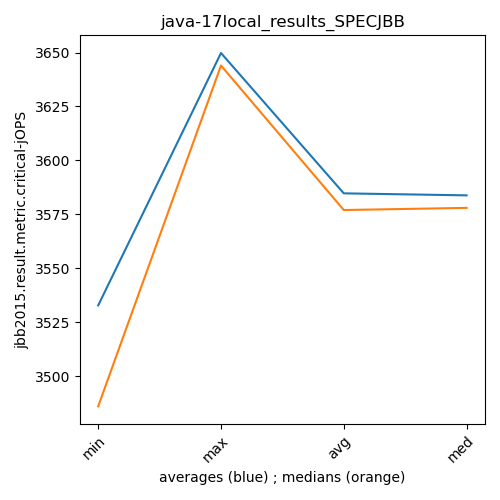

java-17 SPECJBB
Context at bottom
/home/jvanek/git/benchmarks-in-nested-virtualisation-toolchain/final_results/local_results/local_results_J2DBENCH
java-17
SPECJBB
/home/jvanek/git/benchmarks-in-nested-virtualisation-toolchain/final_results/local_results/local_results_SPECJBB
java-17
SPECJBB
local_results_SPECJBB
- local_results_SPECJBB - max-jops
- local_results_SPECJBB - critical jops
local_results_SPECJBB - max-jops
Expected number of java-17 JDKs: 9
1st avgmed_alljdks_metric:
/home/jvanek/git/benchmarks-in-nested-virtualisation-toolchain/final_results/result_processing.py /home/jvanek/git/benchmarks-in-nested-virtualisation-toolchain/final_results/local_results/local_results_SPECJBB jbb2015.result.metric.max-jOPS False
values: [9931, 9931, 9816, 9816, 9931, 10047, 9816, 9931, 9931, 10047, 9816, 9816, 9931, 9816, 9855, 9931, 9931, 9931, 9816, 10162, 10047, 10047, 9931, 9700, 10047, 9931, 9585, 9748, 9700, 10047, 9931, 9931, 9700, 9816, 10162, 9931, 10162, 10162, 9748, 9931, 10047, 10162, 9931, 9585, 9700]

Expected number of iterations: 5
final number of values: 45 out of 45
Pass rate: 100.0%
values: (9585, 10162, 9908.533333333333, 9931)

** accuracy from all jdks and runs
more is better
MIN: 9585
MAX: 10162
AVG: 9908.533333333333
MED: 9931
Relative differences 1:
MIN-MAX: 6.0 %
MIN-AVG: 3.0 %
MIN-MED: 3.0 %
MAX-MIN: -6.0 %
MAX-AVG: -3.0 %
MAX-MED: -2.0 %
AVG-MED: 0.0 %
stored to java-17.properties. sort | uniq that!
2nd avgmed_by_jdk_metric:
values: [9885.0, 9954.4, 9846.8, 9954.2, 9954.4, 9802.2, 9908.0, 9986.8, 9885.0]

values: [9931, 9931, 9816, 9931, 10047, 9748, 9931, 9931, 9931]

values: (9802.2, 9986.8, 9908.533333333333, 9908.0)
values: (9748, 10047, 9910.777777777777, 9931)

** accuracy from all jdks where runs were avged
more is better
MIN: 9802.2
MAX: 9986.8
AVG: 9908.533333333333
MED: 9908.0
Relative differences 1:
MIN-MAX: 2.0 %
MIN-AVG: 1.0 %
MIN-MED: 1.0 %
MAX-MIN: -2.0 %
MAX-AVG: -1.0 %
MAX-MED: -1.0 %
AVG-MED: -0.0 %
stored to java-17.properties. sort | uniq that!
** accuracy from all jdks where runs were medianed
more is better
MIN: 9748
MAX: 10047
AVG: 9910.777777777777
MED: 9931
Relative differences 1:
MIN-MAX: 3.0 %
MIN-AVG: 2.0 %
MIN-MED: 2.0 %
MAX-MIN: -3.0 %
MAX-AVG: -1.0 %
MAX-MED: -1.0 %
AVG-MED: 0.0 %
stored to java-17.properties. sort | uniq that!
local_results_SPECJBB - critical jops
Expected number of java-17 JDKs: 9
1st avgmed_alljdks_metric:
/home/jvanek/git/benchmarks-in-nested-virtualisation-toolchain/final_results/result_processing.py /home/jvanek/git/benchmarks-in-nested-virtualisation-toolchain/final_results/local_results/local_results_SPECJBB jbb2015.result.metric.critical-jOPS False
values: [3552, 3544, 3626, 3577, 3462, 3621, 3629, 3583, 3598, 3568, 3532, 3523, 3552, 3621, 3533, 3598, 3570, 3555, 3618, 3578, 3399, 3554, 3596, 3547, 3719, 3486, 3459, 3649, 3433, 3637, 3683, 3658, 3606, 3619, 3635, 3667, 3441, 3613, 3582, 3641, 3705, 3632, 3644, 3589, 3679]

Expected number of iterations: 5
final number of values: 45 out of 45
Pass rate: 100.0%
values: (3399, 3719, 3584.733333333333, 3596)

** accuracy from all jdks and runs
more is better
MIN: 3399
MAX: 3719
AVG: 3584.733333333333
MED: 3596
Relative differences 1:
MIN-MAX: 9.0 %
MIN-AVG: 5.0 %
MIN-MED: 5.0 %
MAX-MIN: -9.0 %
MAX-AVG: -4.0 %
MAX-MED: -3.0 %
AVG-MED: 0.0 %
stored to java-17.properties. sort | uniq that!
2nd avgmed_by_jdk_metric:
values: [3552.2, 3599.8, 3552.2, 3583.8, 3563.0, 3532.8, 3640.2, 3588.8, 3649.8]

values: [3552, 3598, 3533, 3578, 3554, 3486, 3635, 3613, 3644]

values: (3532.8, 3649.8, 3584.733333333333, 3583.8)
values: (3486, 3644, 3577.0, 3578)

** accuracy from all jdks where runs were avged
more is better
MIN: 3532.8
MAX: 3649.8
AVG: 3584.733333333333
MED: 3583.8
Relative differences 1:
MIN-MAX: 3.0 %
MIN-AVG: 1.0 %
MIN-MED: 1.0 %
MAX-MIN: -3.0 %
MAX-AVG: -2.0 %
MAX-MED: -2.0 %
AVG-MED: -0.0 %
stored to java-17.properties. sort | uniq that!
** accuracy from all jdks where runs were medianed
more is better
MIN: 3486
MAX: 3644
AVG: 3577.0
MED: 3578
Relative differences 1:
MIN-MAX: 4.0 %
MIN-AVG: 3.0 %
MIN-MED: 3.0 %
MAX-MIN: -5.0 %
MAX-AVG: -2.0 %
MAX-MED: -2.0 %
AVG-MED: 0.0 %
stored to java-17.properties. sort | uniq that!
/home/jvanek/git/benchmarks-in-nested-virtualisation-toolchain/final_results/local_results/local_results_RADARGUNs1
java-17
SPECJBB
/home/jvanek/git/benchmarks-in-nested-virtualisation-toolchain/final_results/local_results/local_results_RADARGUNs3
java-17
SPECJBB
/home/jvanek/git/benchmarks-in-nested-virtualisation-toolchain/final_results/local_results/local_results_JMH
java-17
SPECJBB
/home/jvanek/git/benchmarks-in-nested-virtualisation-toolchain/final_results/local_results/local_results_DACAPO
java-17
SPECJBB
pass rates:
local_results_SPECJBB=100.0%
Context:
- local_results
- SPECJBB